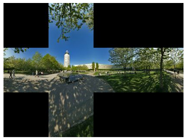
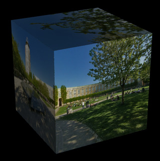

CS 424: Computer Graphics, Fall 2021
Lab 12: Textures and glmatrix.js
In this WebGL lab, you will use the glmatrix vector and matrix library to apply some basic modeling transformations. You will also use image textures to apply the six images from a cubemap texture to the six faces of a cube. The files for this lab are in /classes/cs424/lab12-files, or you can download and extract this zip archive.
The final three labs for the course are supposed to be relatively short, since you should be working on your final project.
Your work for this lab is due next Thursday. Please turn in the file lab12.html by itself or in a folder.
Build a Cube
Your work for this lab will be done in the file lab12.html. Currently, it shows the front face of a white 2-by-2 cube that can be rotated using the keyboard. The scene uses basic lighting, with a single directional light source shining in the direction of the negative z-axis in eye coordinates, and using diffuse illumination only.
Your first job is to complete the cube by drawing the other five faces of the cube. However, you have to do that in a particular way. Each face must be produced by applying a rotation to a copy of the front face. You will work in the draw() function, and you will call drawSquare() to draw each face with the appropriate rotation. Use functions from glmatrix.js to apply the rotation to the modelview matrix.
There are several ways to rotate each face of the cube into position, but you want to do it in a way that is compatible with the textures that you will apply in the next part of the lab. The folder park contains the six images for a cubemap texture. This picture shows the six images laid out on an unfolded cube, with the +Z image in the center, the +X immediately to its right, the -X to its left, the +Y above, and the -Y below:

You want to be able to apply the six images to the six sides of the cube, so that they fit together perfectly along the edges, as if the unfolded cube has been folded back into its 3D cube shape:

Apply the Texture Images
Currently, there is nothing about textures in lab12.html. To get the texture images onto the sides of the cube, you need to
- Add texture coordinates and a sampler variable to the shader program, and use the sampler in the fragment shader to get the color for the fragment. For the texture coordintes, you need an attribute variable and a varying variable.
- Load the texture coordinates for the four vertices of the square into a VBO, and use that VBO as the source of the texture coordinate attribute.
- Create a texture object for each of the six texture images, and load each image into its texture object. (And don't forget to generate mipmaps, or the textures won't work.)
- When drawing each face, you need to bind the appropriate texture object for that face.
- Set the value of the sampler variable to 0, since we are only using the default texture unit zero. (In fact, this seems to be optional; it looks like 0 is the default initial value for a sampler variable. But I'm not sure that that is guaranteed.)
In fact, you need to do one more thing that was not mentioned in class. From the point of view of WebGL, Web images are upside down, and they have to be flipped vertically. Fortunately, WebGL can be configured to do that automatically by calling
gl.pixelStorei( gl.UNPACK_FLIP_Y_WEBGL, 1 );
You still have to deal with asynchronous image loading. It should be OK if you just call draw() after loading each image, although the cube won't be complete until all the images have loaded. Alternatively, as I suggested in class, you could count the images as they are loaded and only call draw after all six have been loaded.
You will probably find it useful to use arrays to hold both the texture image URLs and the texture objects associated with them. Here is an array containing the six URLs (in the order in which I happened to draw the six faces):
const textureURLs = [
"park/posz.jpg",
"park/posx.jpg",
"park/negz.jpg",
"park/negx.jpg",
"park/posy.jpg",
"park/negy.jpg"
];
There are, of course, sample programs in the textbook that do texturing in WebGL.